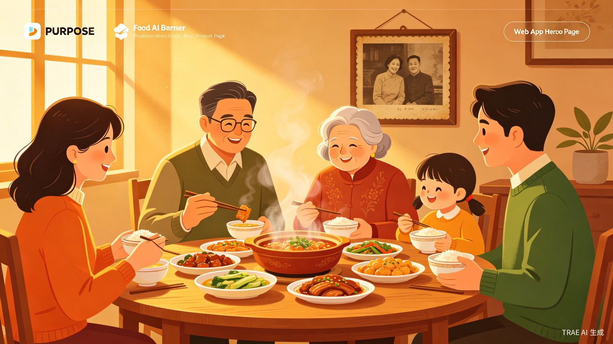
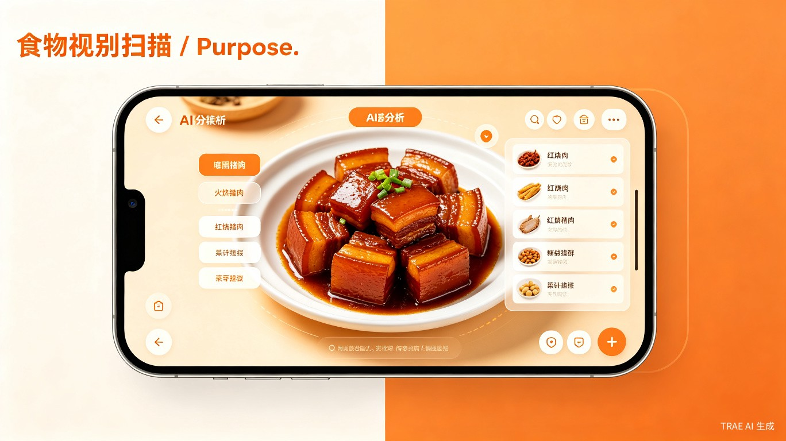
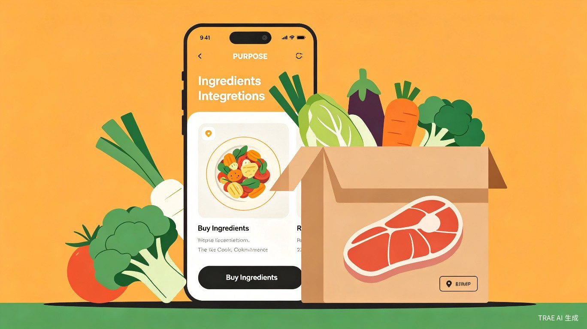
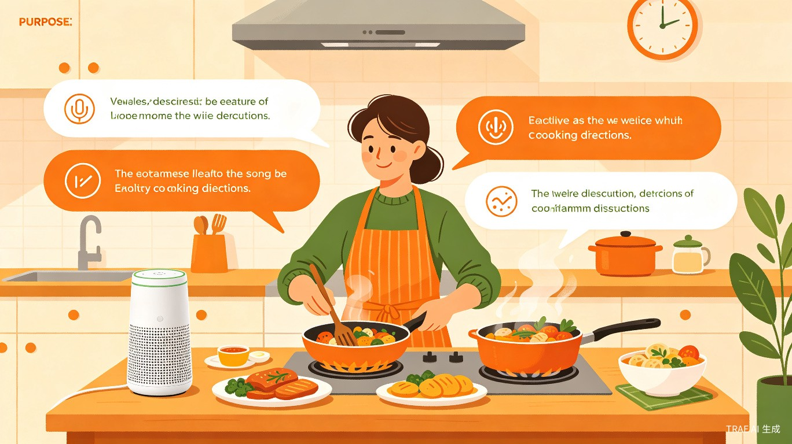

开始识别你的家乡菜
上传一张家乡菜照片，AI 将为你识别菜品并生成完整烹饪指南
拖拽图片到此处，或 点击选择图片
支持 JPG、PNG、WebP 格式，最大 10MB
×
正在准备分析...
上传图片
AI 识别
生成菜谱
完成
基于多模态 AI 的家乡菜还原平台，自动识别菜品、生成完整菜谱与烹饪指南，让每一道家乡菜都能被重新复现

上传一张家乡菜照片，AI 将为你识别菜品并生成完整烹饪指南
拖拽图片到此处，或 点击选择图片
支持 JPG、PNG、WebP 格式，最大 10MB
正在准备分析...
多模态 AI 赋能，让家乡菜不再只存在于记忆中

基于多模态 AI 模型，仅需一张照片即可精准识别菜品名称、所属菜系，支持八大菜系及地方特色小吃

AI 自动生成完整菜谱，包含食材用量、分步烹饪指导、烹饪时间和难度评估，让新手也能轻松上手

支持语音输入菜品描述，AI 根据文字描述也能精准识别，解放双手，边做菜边查询
将生成的菜谱分享到社区，让家乡味道在更多人间传递，传承每一份独特的味觉记忆
只需简单几步，即可在本地运行完整的味忆 FlavorMemo 服务
确保已安装 Python 3.8+，然后安装所需依赖包
前往 ollama.com 下载并安装 Ollama，这是一个本地运行的 AI 模型工具
拉取多模态识别模型（推荐）和文本模型（备用）
运行 Flask 后端服务
双击打开 index.html 文件即可开始体验